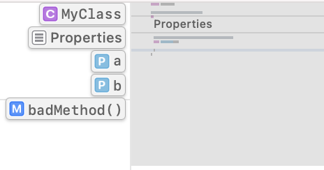

第14章：API设计技巧和窍门¶
欢迎来到本书的最后一章!
在本书中，你已经花了大部分时间来研究特定的主题，学习它们是如何工作的，编写代码来磨练你对它们的直觉，并通过现实生活中的例子来工作。
尽管使用Swift和它所有令人难以置信的能力是一种很好的技能，但如果不实际使用它来编写代码，就没有什么帮助。但更多的时候，你会发现自己创造的代码不仅被你自己使用，也被你的团队使用，如果你正在创建一个开源项目，甚至是其他团队。
在这些情况下，仅仅了解Swift这门语言是不够的，仅仅练习某个特定的语言特性也是不够的。这就是为什么这一章会有点不同。
在本章中，你将探索几个不同的主题。每一个主题都与前一个主题没有直接关系，但它们都与提高你设计优秀API的技能和直觉有关。你可以根据你的兴趣自由地探索这些单独的主题：
- 开发者认为什么是好的
API。 - 如何使用访问级别将你的实现细节与你的公共
API分开并加以封装。 - 强大的语言功能，包括
Swift本身的例子，你可以在你的API中加以利用。字面意义、动态成员查询、动态可调用、属性包装器等。 - 使用
Swift强大的标记语法来记录你的API。 - 最后，与向世界发送你的
API的过程有关的一些重要概念和想法。
这一章也会比以前的章节少一些代码，不需要你复制粘贴代码或运行任何项目。它更像是一个哲学和探索性的章节，不包括一个特定的主题。欢迎你在任何时候停下来，在Xcode中实验一个具体的想法。我们一起展开讨论，我和你，希望能帮助你激发一些新鲜的想法和对API设计的思考方式。
Note
API设计是一个非常有观点的话题。因此，你应该谨慎对待本章中的所有内容，主要作为一种启发，而不是单一的真理。对于你的用例和品味来说，采取有意义的部分，而抛弃那些没有意义的部分。
开发人员想要什么？¶
哇，这是个棘手的问题。我希望我知道，真的；它可能有助于使这本书更进一步 然而，有些事情对开发者来说是显而易见的，也是普遍的。
当开发者第一次与一段新的代码互动时，他们有某些希望和期待。如果这段代码是你的应用程序，而这个人是你团队中的一个新的开发者，或者如果它是你与社区共享的一个开源库，而这个人是它的一个新的消费者，这都不重要。
从本质上讲，开发者要寻找一些能使API感觉良好的特征：
- 它应该是明显的：这意味着使用API对开发者来说是有意义的，你的
API的设计与他们的期望一致。例如，一个Zip类可能有一个预期的方法叫unzip或extract，而不是pullContentsTo(path:)，这并不常见或明显。 - 应该有良好的-文档：人们经常说，
Swift是一种自带文档的语言，因此，好的API不需要文档。我个人不同意这种说法。尽管Swift是一种表达能力很强的语言，但记录你的API的公共部分是与语言无关的，而且对于帮助自我探索、减少歧义和确保你的意图对消费者来说是很清楚的。如果内部的API也能有良好的文档，那就更好了，但面向公众的文档是最基本的。 - 减少心理负担：这与明显性有关，但范围更广，更容易解释。属于这个类别的一些事情包括尝试使用最小的明显的
API命名，如果你正在开发的领域存在惯例，则使用现有技术(例如，如果在该领域有意义，你可以使用View而不是Screen)，并使用对消费者来说简单的抽象。正如Swift API指南所指出的："不要让专家吃惊。不要迷惑初学者"。 - 要现代：这一点涉及到广泛的主题。使用适当的语言惯例，利用消费者期望看到的正确的语言功能，激发消费者的正确使用和创造力，都是这一点的一小部分。
你的API的核心是什么？¶
当raywenderlich.com团队在编写教程或书籍时，总是会问："这个主题中最重要的80%是什么？"
当向外界公开一些API或功能时，你也应该问自己同样的问题，从某种程度上说："这个框架或API的核心功能是什么？"
这个出发点可能看起来很明显，但它是如此关键的，因为它有助于决定你将花费大部分精力来锻造一个易于使用和可探索的API。
这正是你开始将你面向公众的API与你的实现细节区分开来的时候，这些细节与你的大多数消费者并不完全相关。
强制执行这种分离的一个好方法是使用访问级别。
正确使用访问级别¶
访问级别定义了你的代码中哪些实体被暴露，以及它们被暴露在哪些范围内。Swift特别提供了一套相对精细的五种访问级别(从最宽松到最严格)：open, public, internal, fileprivate 和 private。

如果你从来没有写过要在你的应用程序之外消费的代码，你可能不理解对你的代码及其实体的这种控制水平的必要性。但这对于理解每个级别的含义和何时使用它是至关重要的。
默认为内部¶
每一段没有明确设置访问级别的代码，默认为internal。这意味着同一模块中的其他文件可以访问它，但模块外的文件不能。
如果Module2定义了func getThings()，不同的Module1将不能访问getThings()，除非它被注释为public。
// In Module2
func getThings() {
}
// In Module1
Module2.getThings()
// Error: Module 'Module2' has no member named 'getThings'
这对大多数应用程序来说是很好的。这意味着你写的每一段代码都可以被你的应用程序的每一部分访问，因为它通常是一个单一的模块。但是，如果你想把你的应用程序分成几个模块，或者作为一个公共库/框架分享代码，该怎么办？
公共世界¶
在internal不够用的情况下，你会想使用open或public。这些级别在本质上意味着同样的事情。这个实体对它所定义的模块内部或外部的每一段代码都是可用的。
这意味着你可能想把你的UserService公开，让任何人都可以使用它，但把NetworkService放在内部，因为只有你的模块关心它。
// In Module1
public class AmazingClass {
public init() { }
}
open class WonderfulClass {
public init() { }
}
// In Module2
AmazingClass() // OK
WonderfulClass() // OK
open解除了一个额外的限制，允许覆盖或子类化一个标有该访问级别的类。这使得open只适用于类，而不是其他类型，因为public会有同样的效果。
class AmazingSubclass: AmazingClass { } // Error: Cannot inherit from non-open class 'AmazingClass' outside of its defining module
class WonderfulSubclass: WonderfulClass { } // OK
保持隐私¶
由于public和open代表了可能的访问级别中较为宽松的一面，适当地限制对你的代码的私有部分的访问也是至关重要的。这些代码片段通常是实现细节，与你的公共接口甚至内部接口的消费者无关。
Swift提供了两个私有访问级别：
private使一个实体只对它所定义的文件和它所定义的特定范围内可用。- 相反，
fileprivate使一个实体只能在它定义的文件中使用，也可以在不同的对象范围内使用。
例如，设想一个Encrypter类型，它可以加密各种类型：
struct Encrypter<Encrypted> {
let base: Encrypted
}
然后，设想你有一个Person结构，有一个private属性叫password：
struct Person {
let id: UUID
let name: String
private let password: String
}
如果你在同一个文件中扩展Encrypter，为Person提供加密，像这样：
extension Encrypter where Encrypted == Person {
func encrypt() -> String {
sha256(base.password)
}
}
你会得到一个错误，因为password只能在文件中Person的范围内访问。
由于private的保护级别，password是不可访问的。
如果你把private改成fileprivate，代码就会工作，把password的访问范围扩展到同一文件的其他类型。
最后...¶
不，这不是本章的结尾，但最后有一个不同的含义，你应该知道。我提到，public意味着一个实体在模块外是公开的，但不能被重写和子类化。
另一个有用的关键字是final，它的意思与此相同，但也适用于模块范围。这意味着一个final类不能被重写或子类化，无论在模块内部还是外部。
这在一个应用程序的范围或一个严格控制的模块中更有用，因为它限制了可以对该类做什么。这也有助于编译器进行优化，因为它可以知道事实，没有一个方法可以被重写，而这个类将保持不变：
final public class Network {
// Code here...
}
class SpecializedNetwork: Network { } // Error: Inheritance from a final class 'Network'
在一个大的类或代码库中，有些信息可能更难弄清。幸运的是，Xcode可以通过生成的界面预览来帮助解决一些问题。
探索你的界面¶
Xcode内置的一个伟大的功能是能够查看源文件的生成界面。你在本书前面的Objective-C Interoperability一章中使用过这个功能，但你也可以对Swift文件使用同样的功能。
如果你把下面的代码放在一个Swift文件中：
import Foundation
public struct Student {
public let id: UUID
public let name: String
public let grade: Int
let previousTests: [Test]
public func sendMessage(_ message: String) throws -> Bool {
// Implementation
}
private func expel() throws -> Bool {
// Implementation
}
}
struct Test {
let id: UUID
let name: String
let topic: String
}
然后进入Related Items图标，为你的Swift文件挑选生成的界面：
你会看到从你的Swift源生成的完整界面：
public struct Student {
public let id: UUID
public let name: String
public let grade: Int
internal let previousTests: [Test]
public func sendMessage(_ message: String) throws -> Bool
}
internal struct Test {
internal let id: UUID
internal let name: String
internal let topic: String
}
注意到私有方法不是接口的一部分，所有隐含的内部定义都明确显示为internal。
这是获得代码库"鹰眼"视图的好方法，剥离了实现细节和私有范围内的任何东西。
现在你已经很好地掌握了良好的API设计和封装的高层次理念，你还想知道如何利用特定的Swift语言特性来丰富你的API。
语言特性¶
本节将重点介绍一些有趣的语言特性，你可以利用这些特性来改善你的API表面，并提供一些简短的例子，说明API设计者和开发者通常如何使用这些特性。
尽管使用最新和最伟大的语言特性并不是API设计的硬性要求，但了解你所掌握的工具对于为你的消费者打造最自然和现代感的API是非常有价值的。你将在本节中了解更多这方面的信息。
字面符号¶
字面符号是一个很好的抽象，让消费者使用类型化的字面符号来初始化你的类型，例如String, Bool, Array和许多其他类型。
一个很好的例子是Path类型，使用ExpressibleByStringLiteral：
public struct Path: ExpressibleByStringLiteral {
private let path: String
public init(stringLiteral value: StringLiteralType) {
self.path = value
}
public func relativePath(to path: Path) -> Path {
// Implementation ...
}
}
然后你可以通过简单地使用一个字符串字面来初始化它：
// Option 1
Path("/Users/freak4pc/Work/")
// Option 2
let path: Path = "/Users/freak4pc/Work/"
这个功能的强大之处在于，它创造了一个相对平滑和无缝的开发者体验，同时还提供了类型安全和与特定初始化类型相关的额外功能。在Path的例子中，它可以暴露一个relativePath(to:)方法，该方法与任何String无关，但对Path很有趣。
你可以对其他可表达的类型做同样的事情，比如Array：
public struct AlphabeticArray<Element: Comparable>: Collection, ExpressibleByArrayLiteral {
// Additional collection boilerplate here
let values: [Element]
public init(arrayLiteral elements: Element...) {
self.values = elements.sorted(by: <)
}
}
public func presentContacts(_ contacts: AlphabeticArray<String>) {
print(contacts)
}
presentContacts(["Shai", "Elia", "Ethan"]) // Prints Elia, Ethan, Shai
这个例子有点矫揉造作，因为你可以通过简单地在内部使用sorted(by: <)达到同样的效果。但它确实提供了一个类型安全的保证，即你可以期望数组中的值总是按字母顺序排序，这提高了API表面的清晰度。
字母的另一个可能的用例是网络库中的头文件对象：
public struct Headers {
private let headers: [String: String]
// Many other pieces of headers-specific functionality
}
extension Headers: ExpressibleByDictionaryLiteral {
public init(dictionaryLiteral elements: (Header, String)...) {
self.headers = Dictionary(uniqueKeysWithValues: elements.map { ($0.rawValue, $1) })
}
public enum Header: String {
case accept = "Accept"
case contentType = "Content-Type"
case authorization = "Authorization"
case language = "Accept-Language"
// Additional headers
}
}
这个实现可以让你从一个有严格键值的字典中初始化一个新的Headers对象，就像这样：
class HTTPRequest {
func addingHeaders(_ headers: Headers) -> Self {
// Implementation ...
}
}
let request = HTTPRequest(...)
.addingHeaders([.accept: "text/html",
.authorization: "Basic freak4pc:b4n4n4ph0n3"])
你可以更进一步，在字典字面意义的基础上增加ExpressibleByArrayLiteral的一致性，并计算有关联值的枚举：
extension Headers: ExpressibleByArrayLiteral {
public init(arrayLiteral elements: TypedHeader...) {
self.headers = Dictionary(uniqueKeysWithValues:
elements.map(\.value))
}
public enum TypedHeader {
case accept(AcceptType)
case jwtAuthorization(Token)
case basicAuthorization(user: String, password: String)
var value: (String, String) {
switch self {
case .accept(let type):
return ("Accept", type)
case .jwtAuthorization(let token):
return ("Authorization", "Bearer \(token)")
case let .basicAuthorization(user, password):
return ("Authorization", "Basic \(user):\(password)")
}
}
}
}
这让你可以使用以下代码：
let request = HTTPRequest(...)
.addingHeaders([.jwtAuthorization("AmazingToken"),
.basicAuthorization(user: "freak4pc",
password: "b4n4n4ph0n3"),
.accept("text/html")])
因为这两者都是字面意思，所以当使用数组或字典时，你也可以通过提供一个显式类型来实例化它们：
let headersFromDict: Headers = [
.accept: "text/html",
.authorization: "Basic freak4pc:b4n4n4ph0n3"
]
let headersFromArray: Headers = [
.jwtAuthorization("AmazingToken"),
.basicAuthorization(user: "freak4pc",
password: "b4n4n4ph0n3"),
.accept("text/html")
]
这两个都是实际的Headers对象，不是Dictionary或Array。
围绕字面意义的选择是相当多的，但它们都是为了使你的API表面令人愉快和无缝使用，同时仍然为有关的类型用例提供专门的体验。
你可以在苹果的文档中花点时间来试验所有可能的字面符合性列表。
Dynamic member lookup¶
Dynamic member lookup was initially shipped in Swift 4.2 (SE-0195) and meant to provide a somewhat type-safe way to access arbitrary string keys for a type. This was relatively helpful to bridge dynamic languages, such as Python, or create proxy APIs. Unfortunately, it lacked real type-safety when it came to abstracting existing Swift code as well as providing actual runtime safety.
Luckily, Swift 5.1 introduced key path member lookup (SE-0252), which gives you the same dynamic handling capabilities but for a key path to an object. This is one of the most underrated and useful language features brought into Swift in recent years, and it unlocks a wide range of opportunities to improve your APIs.
动态成员查询¶
动态成员查询最初是在Swift 4.2 (SE-0195)中推出的，旨在提供一种有点类型安全的方式来访问一个类型的任意字符串键。这对桥接动态语言(如 Python)或创建代理API相对有帮助。不幸的是，在抽象现有的Swift代码时，它缺乏真正的类型安全，也没有提供实际的运行时安全。
幸运的是，Swift 5.1引入了key path member lookup(SE-0252)，它为你提供了同样的动态处理能力，但却是针对一个对象的key path。这是近年来Swift引入的最被低估、最有用的语言功能之一，它为改善你的API开启了广泛的机会。
自然包裹类型¶
创建包住现有类型的类型是很常见的。这方面的一个例子是试图创建你自己的SearchBar视图来包装一个普通的`UITextField：
class SearchBar: UIControl {
private let textField: UITextField
}
你可能注意到在搜索栏和文本字段之间有1对1的关系。例如，你可能希望SearchBar.isEnabled禁用文本字段本身，或者SearchBar.keyboardType改变底层的textField。
你可以考虑手动完成这个任务：
extension SearchBar {
var isEnabled: Bool {
get { textField.isEnabled }
set { textField.isEnabled = newValue }
}
var keyboardType: UIKeyboardType {
get { textField.keyboardType }
set { textField.keyboardType = newValue }
}
// About 20 more of these ...
}
但这是相当繁琐的，也会阻碍可维护性，需要大量的手工工作。如果UITextField在未来得到一些新的属性怎么办？
幸运的是，有一种方法可以摆脱所有这些模板的束缚：
@dynamicMemberLookup
class SearchBar: UIControl {
private var textField: UITextField
subscript<T>(
dynamicMember keyPath: WritableKeyPath<UITextField, T>
) -> T {
get { textField[keyPath: keyPath] }
set { textField[keyPath: keyPath] = newValue }
}
}
一旦你给SearchBar添加了@dynamicMemberLookup注解，Swift将同时寻找基于字符串和基于键路径的subscript。
在这种情况下，从UITextField到任何属性的通用可写键路径意味着你可以从SearchBar直接访问UITextField的任何属性，而无需更多的模板代码。比如说：
let searchBar = SearchBar(...)
searchBar.isEnabled = true
searchBar.returnKeyType = .go
searchBar.keyboardType = .emailAddress
// etc, etc...
丰富关键路径¶
暴露或镜像一个链接对象的关键路径是非常有用的，但你可以从动态成员subscript方法中返回任何你想要的东西。
这意味着你可以用任何其他类型来包装键路径的类型，以丰富原始属性的功能。
一个很好的例子是RxSwift使用@dynamicMemberLookup为RxSwift的.rx命名空间之上的对象的每个属性暴露Binder，这是一个RxSwift特有的抽象。
@dynamicMemberLookup
struct Reactive<Base> {
// Additional implementation details...
subscript<Property>(
dynamicMember keyPath: WritableKeyPath<Base, Property>
) -> Binder<Property> where Base: AnyObject {
Binder(base) { base, value in
base[keyPath: keyPath] = value
}
}
}
这个例子生活在RxSwift的.rx命名空间下，允许对属性进行常规（而不是"丰富"）的访问：
myView.isEnabled // Bool
myView.rx.isEnabled // Binder<Bool>
动态可调用¶
动态可调用是在Swift 5 (SE-0216)中引入的，以便在Swift内创建动态语言/调用的包装时提供语法糖，并允许自然调用值，就像它们是函数一样。
这方面的一个常见例子是试图表示一个shell命令：
@dynamicCallable
struct Command {
let base: String
init(_ base: String) {
self.base = base
}
func dynamicallyCall(withArguments args: [String]) {
print(#line, base, args.joined(separator: " "))
}
}
struct Shell {
static let swift = Command("swift")
}
每当你调用swift属性时，dynamicallyCall(withArguments:)将被调用。
所以调用：
Shell.swift("--version")
生产：
swift --version
你可以使用Process API来执行命令，但这不在本章的范围之内。
你甚至可以利用基于字符串的动态成员查询，使之更加强大。将@dynamicMemberLookup与@dynamicCallable结合起来，并在Command中加入以下下标：
subscript(dynamicMember member: String) -> Command {
Command("\(base) \(member)")
}
将把一个命令的动态访问成员连接起来，作为前一个命令的延续。所以你可以这样写，很自然的：
Shell.swift.build("--verbose")
而dynamicallyCall(withArguments:)会打印出来：
swift build --verbose
属性包装器¶
在Swift 5.1 (SE-0258)中引入的属性包装器，提供了一种抽象处理属性的获取/设置访问器部分的方法。一些常见的内置的是@Published、@State和@Binding，你在功能反应式编程一章中使用过这些。
在设计你的API时，属性封装器在两个方面起到了强大的作用：抽象的可重用性和能力分层。
重用访问器逻辑¶
一个属性封装器的主要目标是封装属性的获取/设置访问器，为你作为一个开发者和其他为你的代码库作出贡献的人提供内部服务。但是，如果这种抽象在你的模块之外是强大的，你可能想让它public。
这方面的一个常见的用例是抽象化UserDefaults，类似于SwiftUI的@AppStorage属性包装器：
@propertyWrapper
struct AppStorage<Value> {
var wrappedValue: Value {
get { defaults.object(forKey: key) as? Value ?? fallback }
set { defaults.setValue(newValue, forKey: key) }
}
private let key: String
private let defaults: UserDefaults
private let fallback: Value
init(wrappedValue fallback: Value,
_ key: String,
store: UserDefaults = .standard) {
self.key = key
self.defaults = store
self.fallback = fallback
if defaults.object(forKey: key) == nil {
self.wrappedValue = fallback
}
}
}
这个属性封装器让你可以简单地通过写来封装从UserDefaults的读写：
@AppStorage("counter") var counter = 4
@AppStorage("thing", store: customDefaults) var thing = "hello"
如果你在AppStorage中添加以下初始化器，你可以通过允许基于字符串的RawRepresentable来使其变得更漂亮一些：
init<R: RawRepresentable>(
wrappedValue fallback: Value,
_ key: R,
store: UserDefaults = .standard
) where R.RawValue == String {
self.init(wrappedValue: fallback,
key.rawValue,
store: store)
}
这让你可以提供带有字符串值的RawRepresentable键，如枚举：
enum Key: String {
case counter
case thing
}
@AppStorage(Key.counter) var counter = 4
@AppStorage(Key.thing, store: customDefaults) var thing = "hi"
如果在提供的用户默认值键中没有值，那么分配的值将被用作默认值并写入用户的默认值中。
这里需要注意的要点是，消费者并不关心UserDefaults一定会被使用，而且在通过包装器的wrappedValue属性访问该值时，属性包装器完全消除了不需要的重复性。
你也可以使用属性包装器来转换或限制消费者的输入。例如，一个Assert或Clamped属性包装器：
@propertyWrapper
struct Clamped<T: Comparable> {
var wrappedValue: T {
get { storage }
set {
storage = min(max(range.lowerBound, newValue),
range.upperBound)
}
}
private var storage: T
private let range: ClosedRange<T>
init(wrappedValue: T, _ range: ClosedRange<T>) {
assert(range.contains(wrappedValue))
self.storage = wrappedValue
self.range = range
}
}
这可以让你把一个属性夹在一个特定的范围内。考虑一个以摄氏度为单位的人体温度：
struct Patient {
let id = UUID()
let name: String
@Clamped(35...42) var temperature = 37.5
}
var p = Patient(name: "Shai")
p.temperature = 39
// Temperature is unmodified as 39, since it's within range
p.temperature = 100
// Temperature is 42, the maximum value in the range
p.temperature = 20
// Temperature is 35, the minimum value in the range
你可以很容易地创建一个类似于fatalError或assert的包装器，在一个无效的值上，而不是简单地将该值夹在一个范围内。
这样的用例是无穷无尽的。例如，swift-argument-parser使用它来定义命令行参数的参数及其属性。
用投影进行分层¶
属性包装器的一个隐藏的超级功能是它们的投影值。它是一个辅助值，你可以使用$前缀来访问被包装的属性。这个功能在Combine和SwiftUI中被大量使用。
例如，在Published属性上使用$前缀，可以将其投射为该值类型的发布者：
@Published var counter = 1
counter // Int
$counter // Publisher<Int, Never>
实现你自己天真的@Published可能看起来像这样：
@propertyWrapper
struct MyPublished<Value> {
var wrappedValue: Value {
get { storage.value }
set { storage.send(newValue) }
}
var projectedValue: AnyPublisher<Value, Never> {
storage.eraseToAnyPublisher()
}
private let storage: CurrentValueSubject<Value, Never>
init(wrappedValue: Value) {
self.storage = CurrentValueSubject(wrappedValue)
}
}
这使用Combine的CurrentValueSubject作为一个存储机制，你可以强制访问，但也可以作为一个发布者使用。
然后你可以像使用@Published一样使用它：
@MyPublished var count = 1
count // Int
$count // AnyPublisher<Int, Never>
另一个很好的例子是@ObservedObject，它使用@dynamicMemberLookup和一个预测值的巧妙组合，让你产生其属性的绑定：
class MyViewModel: ObservableObject {
@Published var counter = 5
}
// In a different class
@ObservedObject var viewModel = MyViewModel()
viewModel // MyViewModel
$viewModel // MyViewModel.Wrapper (which has @dynamicMemberLookup)
viewModel.counter // Int
$viewModel.counter // Binding<Int>
ObservedObject.Wrapper的动态成员查找使用了本章丰富关键路径一节中的相同技巧，将属性转化为它们的Binding包裹的版本。
所有这些例子都是为了说明，使用花哨的语言特性来设计你的API并不是最终目的，而只是为了实现伟大的人机工程学和最终用户的整体体验的手段。
但是现在你已经设计好了一个漂亮的API，写一些关于如何正确使用它的文档可能是有帮助的！
记录你的代码¶
正如本章前面提到的，至少将你的代码面向公众的部分记录下来，对于你的代码的新消费者来说是至关重要的。记录你的内部代码也同样重要，因为不同类型的消费者（开发者）会在以后使用它。
符号文档¶
早在Objective-C时代，苹果就使用了Headerdoc的变体来编写文档。幸运的是，有了Swift，你现在可以使用（几乎）完全的markdown来编写文档。苹果称这种Swift风味的标记为Markup。
从最基本的开始，文档以三个正斜杠（///）开始，或住在/** ... */定界符：
/// This method does a thing.
///
/// This can easily become a multi-line comment as well,
/// and span as many lines as possible.
func performThing() {
// Implementation
}
/**
This method does a different thing.
Multi-line works using these Javadoc-styled delimiters as
well, and it's mainly a matter of taste and preference.
*/
func performOtherThing() {
// Implementation
}
Xcode还处理和识别一些特定的元数据字段，如参数、返回值和抛出的错误等信息：
/// This method does a thing.
///
/// This can easily become a multi-line comment as well,
/// and span as many lines as possible
///
/// - parameter userId: Identifier of user to fetch things for
///
/// - throws: `User.Error` if user doesn't exist or
/// `id` is invalid
///
/// - returns: An array of `Thing`s for the user with
/// the provided ID
func fetchThings(for userId: UUID) throws -> [Thing] {
// Implementation
}
这个方法的快速浏览将看起来像这样：

正如你所看到的，第一句话是文档的主要部分，而其余部分（由一个空行隔开）被分割到讨论部分。另外，所有的元数据都按照预期在自己的"字段"中呈现。
当记录单个属性，甚至是枚举情况时，你可以使用相同元数据字段的子集。例如，note：
/// Represents a single node in a linked list
indirect enum LinkedNode<T> {
/// A node with a value of type `T`
case value(T)
/// A node with a value of type `T`, linked
/// to the next node in a linked list
///
/// - note: `next` is simply another case of the
/// same indirect `Node` enum
case link(value: T, next: LinkedNode)
/// The value associated with the current node
var value: T {
switch self {
case .link(let value, _),
.value(let value):
return value
}
}
/// The next node, if one exists
var next: LinkedNode? {
if case .link(_, let next) = self {
return next
}
return nil
}
}
快速浏览一下link的情况，看起来是这样的：

当然，正如你所期望的，你可以将代码块直接嵌入你的文档中。
你可以选择三个选项来添加代码块。第一种是简单地将你的代码缩进四个空格：
/// This is a function
///
/// A proper usage of this method is:
///
/// myFunction(
/// a: 1,
/// b: "Hello"
/// )
///
func myFunction(a: Int, b: String) -> Bool {
}
第二个选择是在代码块前后使用三连击（```），就像你在常规的Markdown中做的那样：
/// This is a function
///
/// - parameter a: A number
/// - parameter b: A String
///
/// A proper usage of this method is:
///
/// ```
/// myFunction(
/// a: 1,
/// b: "Hello"
/// )
/// ```
func myFunction(a: Int, b: String) -> Bool {
}
第三个不太常见的选项是用三点式代替反斜线（~~~）。
这三个选项都会产生一个相同的快速浏览：
最后，如前所述，你可以在评论中使用markdown的大多数部分：段落、有序和无序的列表、标题、链接和其他。这使得你可以创建相当详细和丰富的文档：
/// This is a function
///
/// It might have a single paragraph, with **bold**
/// words or even _italic text_
///
/// - parameters:
/// - a: A number
/// - b: A string
///
/// - returns: A boolean value
///
/// But it might have more points to discuss, such as:
///
/// * Item 1
/// * Item 2
///
/// # H1 header
/// Some descriptive text with ordered list:
/// 1. First item
/// 2. [Second link item](https://raywenderlich.com)
func myFunction(a: Int, b: String) {
// Implementation
}
这方面的快速观察将如下：

额外的元数据字段¶
像parameters、returns甚至note一样，Xcode支持一系列的元数据字段，你可以在你的文档中使用：

Note
存在一些专门用于游乐场的额外字段，但它们超出了本章的范围。你可以在苹果公司的Markup Functionality文档中阅读更多关于所有可用字段的信息（https://apple.co/3rqAFQA）。
代码标记¶
除了特定符号的文档外，您还可以使用代码标记来划分您的代码。Xcode支持其中的三种。MARK，TODO和FIXME：
// TODO: - Finalize this class later on
class MyClass {
// MARK: - Properties
var a = 33
var b = "Hello"
// FIXME: - There's some issue here that needs attention
func badMethod() {
}
}
以下是文件结构中的情况：
具体来说，MARK在Xcode的最小地图中也是可见的：

你的代码现在已经有了惊人的记录 但在你向世界其他地方发布你的代码之前，还有一些最后的想法要和你分享。
向世界发布¶
在这一节中，你将探索一些关于如何向外界发布一个库或其他代码的想法和重要花絮。不管你是向整个世界开放你的代码，还是将其作为公司的内部库发布，都有一些你应该遵循的准则，以使其他开发者的生活更轻松。
虽然这一节更适用于库的开发者，而不是应用程序的开发者，但它仍然是一个很好的参考，因为即使是应用程序的开发者也可能需要了解为什么库的作者以某种方式工作。
版本管理¶
当为自己写代码时，版本管理并不重要。但是一旦一段代码被捆绑到一些可重用的依赖关系中，并被其他开发者所使用，版本管理就变得相当关键，以确保一致性和可预期性。
大多数框架使用语义版本管理来表示对框架代码库的修改。最基本的格式是这样的。
一个基本版本包括三个部分：
Major：每当你对你的代码做了一个突破性的改变，你就应该撞击这个版本的组件。通常情况下，这个变化有多小并不重要。只要你的消费者由于你的库的变化而不能"按原样"编译他们的代码，就应该有一个主要的版本升级。Minor：使用小版本来表示你的库的非破坏性的、增加的功能或变化。例如，如果你有一个网络库，增加了一个新的方法，那么提升一个次要版本是正确的做法。Patch：每当你修复你的代码库中的错误时，你应该提升你的框架的补丁组件。
你会认为一个小的或补丁的版本变化是安全的更新，因为它不会（或不应该）对现有的代码库造成任何问题。但你会认为一个主要的版本变化是破坏性的，因为你可能需要在更新后修改你与框架的交互。
Note
在最初的开发过程中，你可以使用0.minor.patch版本（意味着主要成分为0）。这向消费者表明，该库仍在开发中，并可能在任何时候打破其API表面，即使有一个次要的或补丁的碰撞。
在一个完整的语义版本中，有两个更有用的部分有时会被使用：pre-release和metadata标签：
Pre-release: 使用版本的预发布部分来表示该版本还不是最终版本。这里使用的一些常用值是rc（候选发布版本）、beta和alpha，并有一个相关的数字（例如rc.1、beta.3、alpha.12）。Metadata：您可以将额外的构建信息分配给语义版本的元数据部分。这一点很少使用，但是在使用的时候，最常见的是为构建编号（例如，4.1.7-rc.1+113245）。
弃用¶
在每段代码的生命周期中，你可能需要淘汰一些类或方法。首先，如果你废止了一段代码，你几乎总是要撞上你的框架的主要版本，因为这意味着你正在对你与消费者的API合同进行破坏性的改变。
向消费者说明这种废弃的最好方法是使用Swift的@available注解。你可以简单地把它附加到一个特定的方法，甚至是整个类：
@available(*, deprecated)
func myOldMethod(value: Int) {
// implementation
}
这导致了以下警告：

你也可以提供一个具体的消息来描述废止的情况：
@available(*, deprecated, message: "Don't use me anymore")
func myOldMethod(value: Int) {
// implementation
}
其中显示了以下警告：

或者最理想的情况是，如果有一个新的符号来替代旧的，你可以通过提供renamed参数来为你的消费者提供一个自动的fixit：
@available(*, deprecated, renamed: "myNewMethod(number:)")
func myOldMethod(value: Int) {
// implementation
}
这导致了以下的修复：
正确使用这些语句可以帮助发展你的API，因为正确的使用可以增强你和你的API消费者之间的沟通，也可以定义开发者的体验（在自动修复的情况下）。
关键点¶
完成这一章的工作非常好！你已经学到了很多关于如何思考和创建伟大的、可预期的和现代的API的知识。
你已经学到了不少关于如何思考和去创建伟大的、可预期的和现代的API。希望你在设计你的下一个API时能记住本章的一些要点。但是不要忘了，关于API设计可能有无穷无尽的意见，你应该努力找到你的声音和审美偏好。
下面是对你今天学到的一些关键点的快速回顾：
- 了解
Swift这种语言是一回事，但设计好一个API是完全不同的技能。 - 开发人员会根据各种特征来"感觉"一个
API有多好：它有多明显，有多好的文档，有多现代，以及API开发者有多注重减少消费者的心理负担。 - 你应该使用访问级别将实现细节（
private、fileprivate和internal）与面向公众的API部分（public和open）适当分开。你应该专注于你的API的"核心"，而不是毫无必要地将API暴露给你的消费者，因为他们在探索时可能会使消费者感到困惑。 - 充分了解
Swift提供的工具和语言特性对设计API是非常有帮助的，因为它们给了你一些创造性的自由，让你可以在其领域内制作出开发者期望的最佳API。你已经探索了一些这样的特性，也看到了一些使用例子：字面意义、动态成员查找、动态可调用、属性包装器等等。混合这些特性（比如在@ObservedObject的情况下）可以证明是相当强大的。 -
虽然
Swift是一种易于阅读的语言，但你仍然应该正确记录你的API，特别是它们面向公众的属性。你可以使用强大的标记语法以及特殊的元数据字段和标记来丰富消费者的文档体验。 -
最后，尽管你可以简单地将你的代码发布给世界，而不需要任何"发布礼仪"，但通常来说，提供适当的版本管理和正确地废弃代码是一个好主意，以免让消费者感到沮丧。
接下来哪里？¶
正如本章开头提到的，API设计是一个众说纷纭的话题。因此，获得你喜欢的直觉的最好方法是尽可能多地了解不同的观点，结合苹果公司的官方指南，并尝试不同的创造性方案 通常有不止一种暴露功能的方法，而找到正确的API的过程也是设计代码的乐趣的一部分。
你也可以阅读Swift的API设计指南(https://bit.ly/39uvYPD)文件，以更好地了解苹果希望你为API命名的内容，以及其他有用的信息。你可以想象，苹果的期望往往与其他开发者和你的API的消费者的期望一致，所以深入研究这个文件是个好主意，它是经过深思熟虑的，相当详细。
总结一下，祝贺你完成了本书的最后一章! 团队感谢你的阅读，希望你喜欢本书旨在展示的各种章节、例子和观点。感谢你一路走来！